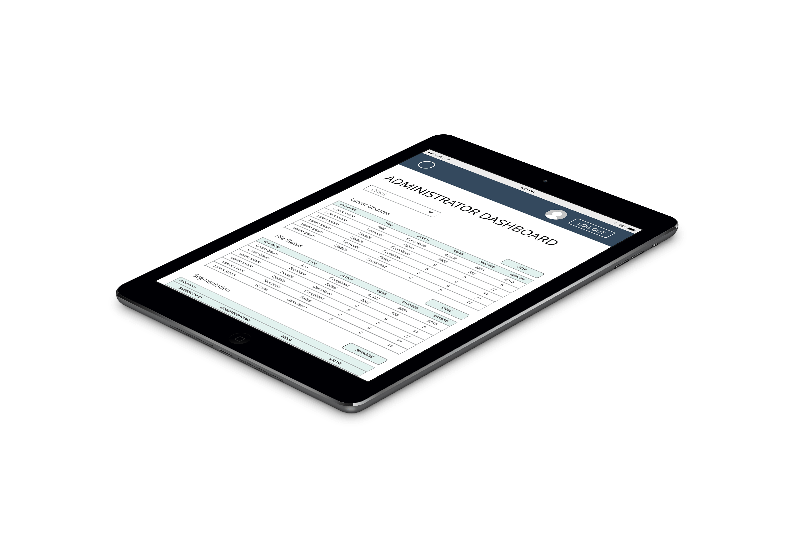

Zotikos

A client administration dashboard for ADURO, Inc.
Role
UX Researcher, UX/UI Designer
Tools and Technologies
Adobe XD, Sketch
Project Goal
Zotikos is a Client Center for ADURO, Inc. It allows for internal teams and external clients to view website statistics, transfer files, manage users, and other administrative tasks.
With the goal of increasing adoption for the site, I was brought in to design a dashboard in order to make the site easier to digest for administrators.
The dashboard would function as a homepage for administrators they open the site. On the dashboard, Account Managers and client contacts could view general statistics about their sites.
I began by working with stakeholders to schedule usability testing with current internal users. I also sketched up some initial wireframe ideas.
Wireframes
I created initial wireframes on paper, then began creating digital versions of the wireframes in Adobe XD.
I created three primary wireframes for getting feedback from the current users.
User Research
Usability testing was scheduled to be onsite at ADURO, Inc. The testers would be five client service employees. Because the employees had already been using the site and a MVP of the dashboard was not ready yet, I opted to keep the test plan short. My intention was to see if there were any usability problems being encountered by veteran and new users.
After the test plan, I used the remainder of the appointment for a semi-structured interview about the product. I also sought feedback about the wireframes. The interview provided excellent insights about which functions in the site that users find most valuable. This lead to excellent discoveries of which metrics and actions would be preferable in the dashboard.
The testers also provided excellent feedback about the wireframes. To my surprise, the users specified that they would only want to see one client at a time, as opposed to seeing an aggregate of all of their clients’ metrics. Additionally, most of the users enjoyed the radial percentage displays. The users also liked the idea of being able to customize their own dashboards by switching out and selecting their preferred component widgets.
The tests illuminated multiple action items. The first low-hanging fruit to be tackled was adding underlines to all hyperlinks on the site, as users didn’t realize that some of the most useful areas could be reached by hyperlinks that looked identical to standard text.
